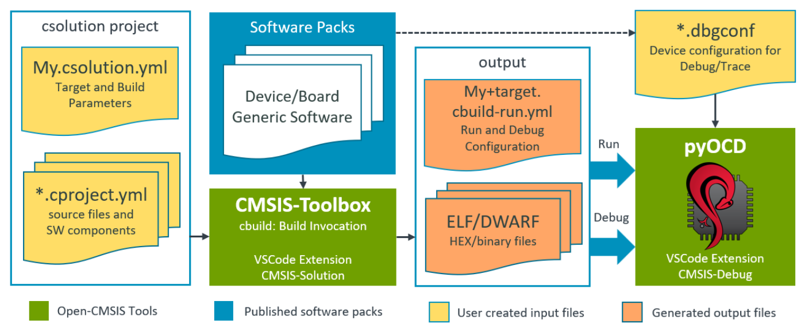
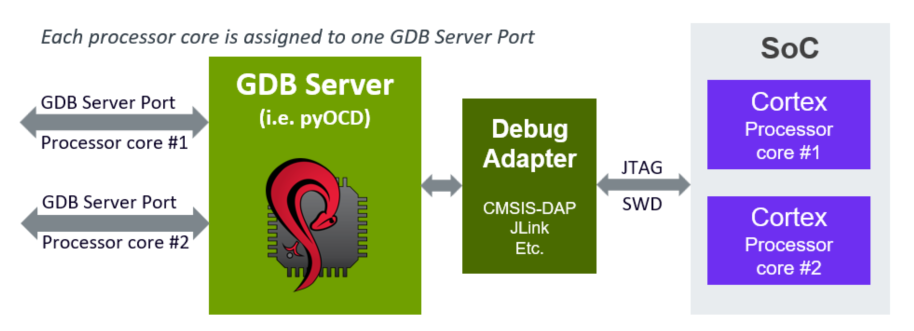

Build Information Files
The following chapter explains the output files generated by the csolution tool. Depending on options, the files *.cbuild-pack.yml and *.cbuild-set.yml are also used as input files. The build information files are used for:
- generate CMake input files via the cbuild2cmake tool.
- provide details for the graphical user interface in VS Code extension Arm CMSIS Solution.
- obtain a list of licenses used in a project.
| File | Description |
|---|---|
*.cbuild-idx.yml |
Index file of all *.cbuild.yml build descriptions; contains also overall information for the application. |
*.cbuild.yml |
Build description of a single *.cproject.yml input file; contains all information for the build step for a specific context including references to the content used from software packs. |
*.cbuild-pack.yml |
Software packs recorded for all input files (*.csolution.yml, cproject.yml, and .clayer.yml); used as input file to ensure reproducible builds that use the same software packs and pack versions. |
*.cbuild-set.yml |
Context selection for the build process, enabled with option --context-set:. |
*.cbuild-run.yml |
Contains the information required to download and debug a csolution project to a target. |
!!! Note CMSIS-Toolbox 2.11 creates the *.cbuild.yml and *.cbuild-run.yml files in the out directory along with the related output files.
Directory Structure
The csolution based projects are portable across different host computers and therefore use relative file references.
-
All file references use relative paths to the base directory of the related
*.ymlfile. Files that are within the file structure of thecsolutionbase directory are also referenced using relative paths, i.e.../layers/layer1/source-file1.c. -
Files that are located in the CMSIS-Pack root directory are prefixed with
${CMSIS_PACK_ROOT}.
Note
All file references to user source code should be relative paths. The prefixes ${CMSIS_PACK_ROOT} and ${CMSIS_COMPILER_ROOT} are used to refer to base directories of files that relate to software packs and compiler-specific files. These base directories can also be on different filesystem drives.
- Files outside of the directory structure of a
csolutionbased application use absolute paths. If absolute paths are used, awarningis issued in the*.cbuild-idx.ymlfile.
A typical directory structure of a csolution based application that uses common layers source files is shown below.
📦 # csolution base directory
┣ myapp.csolution.yml
┣ myapp.cbuild-idx.yml
┣ myapp.cbuild-pack.yml
┣ myapp.cbuild-set.yml
┣ 📂 project1
┃ ┣ mypro1.cproject.yml # file references are relative to directory project1
┣ 📂 project2
┃ ┣ mypro2.cproject.yml # file references are relative to directory project
┣ 📂 layer
┃ ┣ mylayer.clayer.yml # file references are relative to directory layer
┣ 📂 out
┃ ┣ myapp+Target.cbuild-run.yml # file references are relative to directory out
┣ ┣ 📂 mypro1\Target\Debug
┣ ┣ ┣ mypro1.cbuild.Debug+Target.yml # file references are relative to directory out\mypro1\Target\Debug
┣ ┣ 📂 mypro2\Target\Debug
┣ ┣ ┣ mypro2.cbuild.Debug+Target.yml # file references are relative to directory out\mypro2\Target\Debug
Lock Pack Versions
A csolution project refers to packs in different files (*.csolution.yml, *.cproject.yml or *.clayer.yml). To ensure consistent pack usage during application development (for example when new target-types or build-types are introduced), the *.cbuild-pack.yml file records the exact pack versions.
The required packs can be specified in csolution project files in the following ways:
- exactly, e.g.
ARM::CMSIS@5.9.0 - with range, e.g.
ARM::CMSIS@>=5.8.0 - without version, e.g.
ARM::CMSIS - with wildcards on the pack name, e.g.
ARM::CMSI* - without pack name, e.g.
ARM
The required packs are resolved to an exact pack version that is recorded in the *.cbuild-pack.yml file as shown below:
cbuild-pack:
resolved-packs:
- resolved-pack: ARM::CMSIS@5.9.0
selected-by-pack:
- ARM
- ARM::CMSI*
- ARM::CMSIS
- ARM::CMSIS@>=5.8.0
- ARM::CMSIS@5.9.0
If csolution project files are modified, the selected-by-pack information ensures that consistent pack versions are used. If a required pack is no longer used or present in the csolution project, the relevant entry resolved-pack: in the *.cbuild-pack.yml file is removed.
The *.cbuild-pack.yml file is located in the same directory as the *.csolution.yml file and is used by the csolution for every command that uses a *.csolution.yml file. Examples are:
csolution convert- uses and updates the*.cbuild-pack.ymlfile.csolution list ...- uses the*.cbuild-pack.ymlfilecsolution run- uses the*.cbuild-pack.ymlfile.csolution update-rte- uses and updates the*.cbuild-pack.ymlfile.
The operation of the csolution command is as follows:
- Load the csolution project files (
*.csolution.yml,*.cproject.ymlor*.clayer.yml). - Initially there is no
*.cbuild-pack.ymlfile. If it exists, the*.cbuild-pack.ymlfile is loaded. The packs are aligned with theresolved-pack:information of the*.cbuild-pack.ymlfile in these steps:- PopulateContexts: Add
resolved-pack:information to the solution data model. - AddPackRequirements: Pack version ranges and pack wildcards are matched to fully qualified versions of the solution data model. Pack wildcards are expanded to fully qualified packs using cbuild-pack.yml. Pack wildcards are kept for further expansion in the solution data model.
- PopulateContexts: Add
- Execute the
csolutioncommand, for exampleconvert,list,run, orupdate-rte. - Update the
*.cbuild-pack.ymlfile (only if the content changes):- GenerateCbuildPack: Generate the
resolved-pack:list of packs required by all contexts. The originalpack:specification is stored underselected-by-pack:.
- GenerateCbuildPack: Generate the
With the subsequent csolution command, the information of the *.cbuild-pack.yml file is used to load the appropriate fully qualified pack versions, matching previously used packs.
File Format
The following sections describe the format of the build information files. Many nodes are identical with the CSolution Project Format, but optional information is fully expanded. The nodes that are different are explained below under:
*.cbuild-idx.yml
The <solution-name>.cbuild-idx.yml file is generated for the csolution project and refers to all contexts that are generated. It is structured as outlined below.
build-idx: |
Content |
|---|---|
generated-by: |
Reference to csolution tool along with version information used to generate this application. |
description: |
Brief description text copied from the *.csolution.yml input file used to generate this application. |
cdefault: |
Relative path and name of the *.cdefault.yml input file used to generate this application. |
csolution: |
Relative path and name of the *.csolution.yml input file used to generate this application. |
configurations: |
For reference applications with undefined layers: list of potential project configurations for a reference application with undefined layers |
cprojects: |
List of *.cproject.yml and *.clayer.yml input files used to generate this application. |
cbuilds: |
List of *.cbuild.yml output files that are generated by *.cproject.yml files for this application. |
select-compiler: |
For projects with unspecified compiler: list of available compilers for selection |
Example:
build-idx:
generated-by: csolution version 2.3.0
description: USB application examples sharing board layers.
cdefault: cdefault.yml
csolution: USB.csolution.yml
configurations:
- target-type: B-U585I-IOT02A
target-configurations:
- configuration:
- variables:
- Board-Layer: /Users/.../Arm/Packs/Keil/B-U585I-IOT02A_BSP/2.0.0-dev0/Layers/IoT/Board.clayer.yml
cprojects:
- cproject: Device/HID/HID.cproject.yml
clayers:
- clayer: $Board-Layer$
- cproject: Device/MassStorage/MassStorage.cproject.yml
clayers:
- clayer: $Board-Layer$
cbuilds:
- cbuild: out/HID/B-U585I-IOT02A/Debug/HID.Debug+B-U585I-IOT02A.cbuild.yml
project: HID
configuration: .Debug+B-U585I-IOT02A
- cbuild: out/MassStorage/B-U585I-IOT02A/Release/MassStorage.Release+B-U585I-IOT02A.cbuild.yml
project: MassStorage
configuration: .Release+B-U585I-IOT02A
- cbuild: out/hello_world/B-U585I-IOT02A/Release/hello_world.Release+B-U585I-IOT02A.cbuild.yml
west: true
project: hello_world
configuration: .Release+B-U585I-IOT02A
errors: true # indicates error
packs-missing: # lists missing packs
- pack: ARM::CMSIS-RTX # with unspecified version
- pack: ARM::CMSIS@6.0.0 # with specified version
*.cbuild.yml
The <project-name>.<build-type>+<target-type>.cbuild.yml file contains all information for one context. It is structured as outlined below.
build: |
Content |
|---|---|
generated-by: |
Reference to csolution tool along with version information used to generate this application. |
context: |
Project context of this build description. |
compiler: |
Compiler toolchain used for code generation. |
board: |
Board name used for this context. |
board-pack: |
BSP that is defining the Board name used for this context. |
board-books: |
List board documentation as defined in the PDSC element <board>. |
device: |
Device name with processor core selection used in this project context. |
device-pack: |
DFP that is defining the Device name with processor core selection used in this project context. |
device-books: |
List device documentation as defined in the PDSC element <device>. |
processor: |
List of processor attributes used in this project context. |
packs: |
List of software packs along with path information used to generate this project context. |
optimize: |
Generic optimize level for code generation. |
link-time-optimize: |
Enable optimization at linker level. |
debug: |
Global control the generation of debug information. |
warnings: |
Global control warning level for compiler diagnostics. |
misc: |
Global control of miscellaneous literal tool-specific controls. |
define: |
List of global define symbol settings. |
add-path: |
List of global include path settings. |
output-type: |
Select the output type (exe or lib) for this project context. |
output-dirs: |
Specifies the directories used to generate the output files. |
linker: |
Specifies the linker script processing used to generate the output files. |
components: |
List of software components used. |
apis: |
List of API interfaces used. |
groups: |
List of source file groups along with source files. |
constructed-files: |
List of files that are generated by RTE management of the csolution tool. |
licenses: |
List of licenses used by the various software components of this project context. |
Example:
build:
context: HelloWorld_cm0plus.Debug+FRDM-K32L3A6
compiler: AC6
device: K32L3A60VPJ1A:cm0plus
processor:
fpu: off
endian: little
trustzone: non-secure
packs:
- pack: ARM::CMSIS@5.9.0
path: ${CMSIS_PACK_ROOT}/ARM/CMSIS/5.9.0
- pack: NXP::K32L3A60_DFP@15.0.0
path: ${CMSIS_PACK_ROOT}/NXP/K32L3A60_DFP/15.0.0
optimize: none
debug: on
misc:
C:
- -std=c99
- -fno-builtin
CPP:
- -fno-builtin
Link:
- --diag_suppress 6314
- --entry=Reset_Handler
define:
- CPU_K32L3A60VPJ1A_cm0plus
- MCMGR_HANDLE_EXCEPTIONS=1
:
- _RTE_
add-path:
- ../middleware/multicore/mcmgr/src
- RTE/Board_Support/K32L3A60VPJ1A_cm0plus
- RTE/_HelloWorld_cm0plus.Debug_FRDM-K32L3A6
- ${CMSIS_PACK_ROOT}/ARM/CMSIS/5.9.0/CMSIS/Core/Include
- ${CMSIS_PACK_ROOT}/NXP/K32L3A60_DFP/15.0.0
:
output-type: exe
output-dirs:
gendir: generated
intdir: ../tmp/HelloWorld_cm0plus/FRDM-K32L3A6/Debug
outdir: ../out/HelloWorld_cm0plus/FRDM-K32L3A6/Debug
rtedir: RTE
components:
- component: ARM::CMSIS:CORE@5.6.0
condition: ARMv6_7_8-M Device
from-pack: ARM::CMSIS@5.9.0
selected-by: ARM::CMSIS:CORE
- component: NXP::Device:CMSIS:K32L3A60_system@1.0.0
condition: device.K32L3A60_AND_device.K32L3A60_CMSIS
from-pack: NXP::K32L3A60_DFP@15.0.0
selected-by: NXP::Device:CMSIS:K32L3A60_system
files:
- file: ${CMSIS_PACK_ROOT}/NXP/K32L3A60_DFP/15.0.0/system_K32L3A60_cm0plus.c
category: sourceC
- component: NXP::Device:SDK Drivers:clock@2.2.1
condition: device.K32L3A60_AND_driver.common
from-pack: NXP::K32L3A60_DFP@15.0.0
selected-by: NXP::Device:SDK Drivers:clock
files:
- file: ${CMSIS_PACK_ROOT}/NXP/K32L3A60_DFP/15.0.0/drivers/fsl_clock.c
category: sourceC
- component: NXP::Device:SDK Drivers:common@2.3.2
condition: device.K32L3A60_AND_device.K32L3A60_CMSIS_AND_driver.clock
from-pack: NXP::K32L3A60_DFP@15.0.0
selected-by: NXP::Device:SDK Drivers:common
files:
- file: ${CMSIS_PACK_ROOT}/NXP/K32L3A60_DFP/15.0.0/drivers/fsl_common.c
category: sourceC
- file: ${CMSIS_PACK_ROOT}/NXP/K32L3A60_DFP/15.0.0/drivers/fsl_common_arm.c
category: sourceC
:
groups:
- group: Application
files:
- file: ./hello_world_core1.c
category: sourceC
- file: ./RTE/Device/K32L3A60VPJ1A_cm0plus/K32L3A60xxx_cm0plus_flash.scf
category: linkerScript
- group: Middleware
files:
- file: ../middleware/multicore/mcmgr/src/mcmgr.c
category: sourceC
:
constructed-files:
- file: RTE/_HelloWorld_cm0plus.Debug_FRDM-K32L3A6/RTE_Components.h
category: header
*.cbuild-pack.yml
The <solution-name>.cbuild-pack.yml file contains the pack information for the csolution project. It is structured as outlined below.
cbuild-pack: |
Content |
|---|---|
resolved-packs: |
List of packs used to create the project contexts. |
resolved-packs: |
Content |
|---|---|
- resolved-pack: |
pack name used. |
selected-by-pack: |
List of components included from the pack. |
Example:
cbuild-pack:
resolved-packs:
- resolved-pack: ARM::CMSIS@5.9.0
selected-by:
- ARM::CMSIS
- resolved-pack: ARM::V2M_MPS3_SSE_300_BSP@1.2.0
selected-by:
- ARM::V2M_MPS3_SSE_300_BSP@1.2.0
- resolved-pack: Keil::ARM_Compiler@1.7.2
selected-by:
- Keil::ARM_Compiler
*.cbuild-set.yml
The <solution-name>.cbuild-set.yml file selects the context set for the csolution project. The structure is outlined below.
cbuild-set: |
Content |
|---|---|
generated-by: |
Reference to tool along with version information that generated this file. |
contexts: |
List of context names for the context-set: option. |
Example:
cbuild-set:
generated-by: csolution version 2.2.0
contexts:
- context: CM33_s.Release+AVH
- context: CM33_ns.Debug+AVH
Nodes for Project Management
configurations:
The configurations: node lists possible configurations for reference applications that have undefined variable settings.
configurations: |
Content |
|---|---|
- target-type: |
Name of target-type for which configurations are listed. |
target-configurations: |
List of possible configurations for the target-type. |
- configuration: |
Possible configuration for the reference application. |
- variables: |
List of variable names with configuration information. |
<layer-name>: |
Layer name with a value that is the path to the clayer.yml file. |
description: |
Brief description text taken from *.clayer.yml. |
settings: |
Usage instructions for this layer. |
- set: |
Value of set and info taken from connect: in *.clayer.yml. |
path: |
Path to the directory that contains the layer (from *.PDSC file). |
file: |
Name of the *.clayer.yml file (optional with a relative path to the directory specified with path) (from *.PDSC file). |
copy-to: |
Proposed directory for the layer in the csolution project (from *.PDSC file). |
Example:
configurations:
- target-type: B-U585I-IOT02A
target-configurations:
- configuration:
- variables:
- Board-Layer: /Users/.../Arm/Packs/Keil/B-U585I-IOT02A_BSP/2.0.0-dev0/Layers/IoT/Board.clayer.yml
description: "Configuration including FXLS8962 sensor"
- target-type: MyBoard
- configuration:
- variables:
- Board-Layer: ./layer/board/frdmk22f/frdmk22f.clayer.yml
description: "Configuration: Ethernet, UART, and WiFi"
settings:
- set: set1.select1 (connect A - set 1 select 1)
path: ./layer/board/frdmk22f
file: frdmk22f.clayer.yml
copy-to: board/frdmk22f
- Shield-Layer: ./layer/shield/agmp03/agmp03.clayer.yml
description: "Shield with FXLS8962 and FXAS21002"
settings:
- set: Bus.SPI (FXLS8962 SPI Bus - Jumper configuration: I2C/SPI=SPI)
- set: Bus.SPI (FXAS21002 SPI Bus - Jumper configuration: I2C/SPI=SPI)
path: ./layer/board/frdmk22f
file: frdmk22f.clayer.yml
copy-to: board/frdmk22f
cprojects:
The cprojects: node lists all *.cproject.yml input files along with *.clayer.yml files that are used to compose the application.
cprojects: |
Content |
|---|---|
- cproject: |
Relative path and name of a *.cproject.yml input file. |
clayers: |
List of *.clayer.yml input files used by this *.cproject.yml file. |
Example:
cprojects:
- cproject: AWS_MQTT_MutualAuth_SW_Framework/Demo.cproject.yml
clayers:
- clayer: AWS_MQTT_MutualAuth_SW_Framework/Socket/FreeRTOS+TCP/Socket.clayer.yml
- clayer: AWS_MQTT_MutualAuth_SW_Framework/Socket/WiFi/Socket.clayer.yml
- clayer: AWS_MQTT_MutualAuth_SW_Framework/Socket/VSocket/Socket.clayer.yml
:
cbuilds:
The cbuilds: node lists all project context configurations that are generated with this build.
cbuilds: |
Content |
|---|---|
- cbuild: |
Build description file of a single context for a *.cproject.yml input file. |
project: |
Project name. |
configuration: |
Context configuration for this build description file. |
errors: |
Error indication. |
packs-missing: |
List of missing packs. |
packs-unused: |
List of unused packs. |
messages: |
List of errors:, warnings:, or info: messages. |
Example:
cbuilds:
- cproject: AWS_MQTT_MutualAuth_SW_Framework/Demo.cproject.yml
project: Demo
configuration: .Debug+AVH
errors: true
messages:
errors:
- no compatible software layer found. Review the required connections of the project
info:
- test.cbuild-set.yml - file is already up-to-date
select-compiler:
If no compiler is specified in the csolution project, the cbuild setup command lists the available compilers based on the compiler registration and select-compiler: node in the file *.csolution.yml or cdefault.yml.
select-compiler: |
Content |
|---|---|
- compiler: |
Name (optionally with version) of the compiler toolchain; copied from the select-compiler: node in the csolution project. |
packs:
The packs: node is the start of a pack list that is used for the project context.
packs: |
Content |
|---|---|
- pack: |
Explicit pack specification with exact version information used. |
path: |
Path name that stores the software pack (see note). |
Note
Packs that are located in the CMSIS-Pack root directory are prefixed with ${CMSIS_PACK_ROOT}.
Example:
packs:
- pack: ARM::CMSIS-FreeRTOS@10.4.6
path: ${CMSIS_PACK_ROOT}/ARM/CMSIS-FreeRTOS/10.4.6
- pack: ARM::CMSIS@5.9.0
path: ${CMSIS_PACK_ROOT}/ARM/CMSIS/5.9.0
:
- pack: MDK-Packs::IoT_Socket@1.3.1
path: ../IoT_Socket
generators:
The generators: node contains information for calling a generator.
generators: |
Content |
|---|---|
- generator: |
Section for a specific generator. |
path: |
Path name for storing the files generated. |
gdpsc: |
File name of the *.GDPSC file that stores the information in path:. |
command: |
Section for invoking the generator on different Host operating systems. |
Example:
generators:
- generator: STM32CubeMX
path: RTE/Device
gpdsc: RTE/Device/STM32L475VGTx/FrameworkCubeMX.gpdsc
command:
win:
file: ${CMSIS_PACK_ROOT}/Keil/STM32L4xx_DFP/2.6.1/MDK/CubeMX/STM32CubeMxLauncher.exe
arguments:
- STM32L475VGTx
- ../../Release+STM32L4.cprj
- ${CMSIS_PACK_ROOT}/Keil/STM32L4xx_DFP/2.6.1
generator:
generator: |
Content |
|---|---|
- id: |
Generator identifier used for this component |
path: |
File name and path to the *.cgen.yml file that is generated. |
Nodes for File Management
| Keyword | Description |
|---|---|
groups: |
Start of a list that adds source groups and files. |
components: |
Start of a list that adds software components. |
linker:
linker: |
Content |
|---|---|
- regions: |
Path and file name of regions_<device_or_board>.h, used to generate a Linker Script via pre-processor. |
- script: |
Path and file name of the pre-processed Linker Script template. |
- define: |
Define symbol settings for the linker script file preprocessor. |
groups:
groups: |
Content |
|---|---|
- group: |
Name of the group. |
optimize: |
Optimize level for code generation. |
debug: |
Generation of debug information. |
warnings: |
Control generation of compiler diagnostics. |
define: |
Define symbol settings for code generation. |
add-path: |
Additional include file paths. |
misc: |
Literal tool-specific controls. |
groups: |
Start a nested list of groups. |
files: |
List of files that belong to a group |
files: of a group
files: |
Content |
|---|---|
- file: |
Name of the file. |
category: |
File category according to Open-CMSIS-Pack specification |
optimize: |
Optimize level for code generation. |
debug: |
Generation of debug information. |
warnings: |
Control generation of compiler diagnostics. |
define: |
Define symbol settings for code generation. |
add-path: |
Additional include file paths. |
misc: |
Literal tool-specific controls. |
apis:
apis: |
Content |
|---|---|
- api: |
Name of the API. |
condition: |
Reference to the condition ID of the software pack that triggered the inclusion of this API. |
from-pack: |
Pack that defines this API. |
implemented-by: |
Refers to the software component that implements the API. |
files: |
List of files that belong to this API. |
components:
components: |
Content |
|---|---|
- component: |
Name of the software component. |
condition: |
Reference to the condition ID of the software pack that triggered the inclusion of this component. |
from-pack: |
Pack that defines this component. |
selected-by: |
The original component name used in cproject/clayer.YML. |
optimize: |
Optimize level for code generation. |
debug: |
Generation of debug information. |
warnings: |
Control generation of compiler diagnostics. |
define: |
Define symbol settings for code generation. |
add-path: |
Additional include file paths. |
misc: |
Literal tool-specific controls. |
instances: |
Number of component instances configured. |
maxInstances: |
Maximum number component instances that can be configured. |
generator: |
Generator information for components that are configurable via a generator. |
implements: |
Refers to the API that the component is based on. |
files: |
List of files that belong to this component. |
files: of a component
files: |
Content |
|---|---|
- file: |
Name and path to the file. |
category: |
File category according to Open-CMSIS-Pack specification |
attr: |
File category according to Open-CMSIS-Pack specification; api refers to header files that define the api of a component. |
condition: |
Reference to the condition ID of the software pack that triggered the inclusion of this file. |
select: |
Selection text for user code template files and api header files. |
version: |
For files that belong to components the version specified in the PDSC file. |
base: |
Unmodified configuration file (base file from the software pack) that is currently in use. |
update: |
New configuration file from an updated software pack. |
status: |
Action for configuration file update: suggested, recommended, required. |
constructed-files:
A list of files that are generated by the RTE management of the csolution tool.
constructed-files: |
Content |
|---|---|
- file: |
Name and path to the file. |
category: |
File category according to Open-CMSIS-Pack specification. |
Nodes for License Information
The *.cbuild.<build-type>+<target-type>.yml files contain license information about each software component that is included in software packs.
licenses:
Each different license that is used in a project context has a separate section.
licenses: |
Content |
|---|---|
- license: |
License identifier or short description. |
license-agreement: |
File category according to Open-CMSIS-Pack specification |
packs: |
List of software packs used to generate this project context. |
components: |
List of software components used to generate this project context. |
Example:
licenses:
- license: <proprietary> END USER LICENSE AGREEMENT FOR ARM SOFTWARE DEVELOPMENT TOOLS
license-agreement: ${CMSIS_PACK_ROOT}/Keil/MDK-Middleware/8.0.0/license_terms/license_agreement.txt
packs:
- pack: Keil::MDK-Middleware@8.0.0
components:
- component: Keil::USB&MDK:CORE@8.0.0
- component: Keil::USB&MDK:Device:HID@8.0.0
- component: Keil::USB&MDK:Device@8.0.0
- license: Apache-2.0
packs:
- pack: ARM::CMSIS-Compiler@2.1.0
- pack: ARM::CMSIS-Driver_STM32@1.0.0
- pack: ARM::CMSIS-RTX@5.9.0
:
components:
- component: CMSIS Driver:GPIO(API)
- component: CMSIS Driver:I2C(API)
- component: CMSIS Driver:SPI(API)
:
- component: ARM::CMSIS-Compiler:CORE@1.1.0
- component: ARM::CMSIS-Compiler:STDERR:Custom@1.1.0
- component: ARM::CMSIS-Compiler:STDIN:Custom@1.1.0
:
west:
For each west build context a node west: is created in *.cbuild.yml
west: |
Content | |
|---|---|---|
app-path: |
Required | Path to the application source directory. |
project-id: |
Required | Project identifier |
board: |
Required | Board name used for west build invocation. |
device: |
Optional | Specify the processor core for execution of the generated image (used in *.cbuild-run.yml). |
west-defs: |
Optional | Defines in CMake format. The west-defs: from build and target-type are added. |
west-opt: |
Optional | Options for the west tool (default: empty). |
Example:
west:
project-id: hello_world
app-path: ../../../../hello_world
board: stm32h7b3i_dk
west-defs:
- CONFIG_BUILD_OUTPUT_HEX=y
Generator Information Files
The csolution run command generates the following build information files in the intdir: of the related context. These files are the input to a generator and provide information about the csolution project to the generator. The files are generated in the tmp directory of the project and contain absolute paths.
| File | Description |
|---|---|
*.cbuild-gen-idx.yml |
Index file of all *.cbuild-gen.yml build descriptions; contains also overall information for the application. |
*.cbuild-gen.yml |
Build description of a single *.cproject.yml input file. The format is identical with the *.cbuild.yml file. |
File Structure of *.cbuild-gen-idx.yml
build-gen-idx: |
Content |
|---|---|
generated-by: |
Reference to csolution tool along with version information used to generate this application. |
generators: |
List of generators that are called with the run command. |
generators: |
Content |
|---|---|
- id: |
generator identifier specified with the option --generator in the csolution run command. |
output: |
Specifies the directory for generated files. |
board: |
Board name used for the generator. |
device: |
Device name used for the generator. |
project-type: |
Describes the project type "single-core", "multi-core", "trustzone". |
cbuild-gens: |
List of *.cbuild-gen.yml files with options that are generated for the generator run. |
cbuild-gens: |
Content |
|---|---|
- cbuild-gen: |
Build information file with name <context>.cbuild-gen.yml; structure identical with *.cbuild.yml. |
project: |
Project name (used as a name for *.cgen.yml when name: is not specified). |
configuration: |
Specifies .build-type+target-type of this context. |
name: |
Explicit name for the *.cgen.yml generator import file specified by generator options. |
map: |
Mapping to a generator-specific run-time context name specified by generator options. |
Example:
build-gen-idx:
generated-by: csolution version 2.3.0
generators:
- id: CubeMX
output: C:/w/csolution-examples/CubeMX/STM32CubeMX/MyBoard # output directory
device: STM32U585AIIx
board: B-U585I-IOT02A
project-type: single-core
cbuild-gens:
- cbuild-gen: C:/w/csolution-examples/CubeMX/tmp/CubeMX/MyBoard/Debug/CubeMX.Debug+MyBoard.cbuild-gen.yml
project: CubeMX # user selected name of the project
configuration: .Debug+MyBoard
name: BoardLayer # create BoardLayer.cgen.yml in output directory (new in CMSIS-Toolbox 2.4.0)
map: Boot # map to STM32CubeMX run-time context (new in CMSIS-Toolbox 2.4.0)
Generator Import File
The *.cgen.yml file lists the generated csolution project part and starts with the node generator-import:. It is defined similarly to a Software Layer additional parameters, files, and components that are included in the project.
File Structure of *.cgen.yml
generator-import: |
Content |
|---|---|
generated-by: |
Tool name that generated this file |
for-device: |
Device information, used for consistency check (device selection is in *.csolution.yml). |
for-board: |
Board information, used for consistency check (board selection is in *.csolution.yml). |
packs: |
Defines packs that are required for this layer. |
define: |
Define symbol settings for code generation. |
undefine: |
Remove define symbol settings for code generation. |
add-path: |
Additional include file paths. |
del-path: |
Remove specific include file paths. |
groups: |
List of source file groups along with source files. |
components: |
List of software components used. |
Run and Debug Management
The CMSIS-Toolbox build system manages software packs that contain information about device, board, and software components. It controls the build output (typically ELF/DWARF files), and has provisions for HEX, BIN and post-processing. The target-set: node configures the application images and the debugger for a target-type.
The software packs contain information that is the basis for debug and run settings:
- Flash algorithms of device memory (in DFP) and board memory (in BSP).
- On-board debug adapter (a default programming/debug channel) including features.
- Available memory of device and board.
- Device parameters such as processor core(s) and clock speed.
- Debug Access Sequences and System Description Files that support more complex Cortex-A/R/M configurations.
- Debug Configuration files (
*.dbgconf) that configure device properties such as trace pins. - CMSIS-SVD System View Description (SVD) files for viewing device peripherals.
- CMSIS-View Software Component Viewer Description (SCVD) files for analysis of software components (RTOS, Middleware).
The user may add the following information in the *.csolution.yml file:
- Additional memory with flash algorithms for external memory in custom hardware using the
memory:node. - Additional images that should be programmed or loaded using the
images:node. - Debugger configuration provided by packs can be adjusted using the
debugger:node.
Note
The information may be defined at various places. The *.csolution.yml file overrules the information from the BSP. The BSP overrules the information from the DFP.
The file *.cbuild-run.yml contains for a single target-type of a csolution project the relevant information for run and debug. The information is collected by the CMSIS-Toolbox and the file name has the format <solution-name>+<target-type>.cbuild-run.yml file. It is used by programmers and debuggers in command line or IDE workflows. The information is portable, i.e. from a cloud-hosted CI system to a desktop test system.

The <solution-name>+<target-type>.cbuild-run.yml file represents a single target-type of a csolution project.
Example:
cbuild-run:
generated-by: csolution version 2.7.0
solution: CubeMX.csolution.yml
target-type: MyBoard_ROM
compiler: AC6
device: STMicroelectronics::STM32U585AIIx
device-pack: Keil::STM32U5xx_DFP@3.0.0
board: STMicroelectronics::B-U585I-IOT02A:Rev.C
board-pack: Keil::B-U585I-IOT02A_BSP@2.0.0
programming:
- algorithm: ${CMSIS_PACK_ROOT}/Keil/STM32U5xx_DFP/3.0.0/CMSIS/Flash/STM32U5xx_2M_0800.FLM
start: 0x08000000
size: 0x00200000
ram-start: 0x20000000
ram-size: 0x00008000
- algorithm: ${CMSIS_PACK_ROOT}/Keil/STM32U5xx_DFP/3.0.0/CMSIS/Flash/STM32U5xx_2M_0C00.FLM
:
system-descriptions:
- file: ${CMSIS_PACK_ROOT}/Keil/STM32U5xx_DFP/3.0.0/CMSIS/SVD/STM32U585.svd
type: svd
output:
- file: out/CubeMX/MyBoard_ROM/Debug/CubeMX.axf
type: elf
system-resources:
memory:
:
debugger:
- name: pyOCD@CMSIS-DAP
:
debug-vars:
:
debug-sequences:
:
debug-topology:
:
File Structure of *.cbuild-run.yml
The following describes the overall structure of the *.cbuild-run.yml file. While the content of this file is generated using the cbuild command, it is also possible to manually generate this file or modify content.
cbuild-run: |
Content | |
|---|---|---|
generated-by: |
Optional | Tool name that generated this file. |
solution: |
Optional | Name of the *.csolution.yml file. |
target-type: |
Optional | Name of the target-type that was selected. |
target-set: |
Optional | Name of the target-set that was selected (format <target-type>[@<set>]). |
compiler: |
Optional | Compiler toolchain used for code generation. |
board: |
Optional | Board name used for this target. |
board-pack: |
Optional | BSP that is defining the Board name used for this target. |
device: |
Optional | Device name used in this target. |
device-pack: |
Optional | DFP that is defining the Device used in this target. |
output: |
Required | List of the image (ELF, HEX, BIN) files generated. |
system-resources: |
Optional | List of the system resources available in target. |
system-descriptions: |
Optional | List of description files for peripherals and software components. |
debugger: |
Required | Configuration information for the debug connection. |
debug-sequences: |
Optional | Tool actions for debugging, tracing, or programming. |
programming: |
Optional | Algorithms for flash download. |
debug-topology: |
Optional | Properties of the system hardware for debug functionality. |
output:
This node contains information about the images that should be loaded. The images that are generated by the csolution project are typically configured using a target-set. The output: node includes also image files that are generated with a West Build specification.
The output: node also contains other required files that are added with images: in the *.csolution.yml file.
output: |
Content | |
|---|---|---|
- file: |
Required | Specifies the file name. |
type: |
Required | Specifies the file type. |
info: |
Optional | Brief description of the file. |
load: |
Required | Load mode of the image file for programmers and debug tools. |
load-offset: |
Optional | Offset applied in *.csolution.yml when loading the image file. |
pname: |
Optional | Image belongs to processor in a multi-core system. |
load: mode
For image: files that are added using the images: node of the *.csolution.yml file but have no load: mode specified, the CMSIS-Toolbox adds an load: mode depending on the file type.
- Files with
type: elfgetload: image+symbols. - Files with
type: libgetload: none. - All other file types get
load: image.
For files that are the output of a cproject.yml project, the output: node lists all files that are generated. The CMSIS-Toolbox adds an load: mode depending on the compiler used and the file types that are generated to indicate how these files should be used by programmers and debug tools.
For compiler: AC6:
- When only a file with
type: elfis generated, the file getsload: image+symbols. - When a file with
type: elfand a file withtype: hexis generated, thetype: elffile getsload: symbolsand thetype: hexfile getsload: image. This allows to bypass GNU loader issues with Arm Compiler 6. - All other file types get
load: none.
For any other compiler:
- Files with
type: elfgetload: image+symbols. - All other file types get
load: none.
Note
info: generate by <context> indicates that an image is generated by a context of the csolution project.
system-resources:
The system-resources: node lists the resources of a target system. It includes memory from the DFP, BSP, and memory: definitions from the csolution.yml file.
system-resources: |
Content | |
|---|---|---|
memory: |
Optional | Identifies the section for memory. |
memory: |
Content | |
|---|---|---|
- name: |
Required | Name of the memory region (when PDSC contains id, it uses the id as name). |
access: |
Required | Access attribute string for the memory (see table below). |
start: |
Required | Base address of the memory. |
size: |
Required | Size of the memory. |
pname: |
Optional | Only accessible by a specific processor. |
alias: |
Optional | Name of identical memory exposed at a different address. |
from-pack: |
Optional | Pack that defines this memory. |
The table lists the letters and their meaning for use in the access attribute string.
access: |
Description |
|---|---|
| r | Readable |
| w | Writable |
| x | eXecutable |
| p | Peripheral area. Details described in SVD file. |
| s | Secure attribute |
| n | Non-secure attribute |
| c | non-secure Callable attribute |
Example:
system-resources:
memory:
- name: ITCM_Flash
access: rx
start: 0x00200000
size: 0x00100000
from-pack: Keil::STM32U5xx_DFP@3.0.0
- name: Ext-Flash
access: rx
start: 0x40000000
size: 0x200000
system-descriptions:
List of the description files for peripherals and software components used in this project target.
system-descriptions: |
Value | Use | Content |
|---|---|---|---|
- file: |
string | Required | Specifies the file name including the path. |
type: |
string | Required | Specifies the file type (see table below). |
info: |
string | Optional | Brief description of the file. |
pname: |
string | Optional | File is used only for a specific processor; default is for all processors. |
type: |
Description |
|---|---|
svd |
System View Description (*.svd) file specified in the DFP. |
scvd |
Software Component Viewer Description (*.scvd) file for CMSIS-View. |
Note
- The
pname:specifier applies a description file only to a specific processor core. The same description file may therefore appear more than once with differentpname:specifiers.
debugger:
This node contains connection information for a debugger with initial settings coming from the board support pack (BSP) or device family pack (DFP).
debugger: |
Content | |
|---|---|---|
name: |
Required | Identifies the debug configuration. |
info: |
Optional | Brief description from target-set. |
protocol: |
Optional | Selected debug protocol (jtag or swd). |
clock: |
Optional | Selected debug clock speed in Hz. |
dbgconf: |
Optional | Debugger configuration file (pinout, trace). |
start-pname: |
Optional | Debugger connects at start to this processor. |
gdbserver: |
Optional | Information for GDB server option of debugger. |
telnet: |
Optional | Telnet service configuration. |
trace: |
Future | Trace port of the debugger. |
*: |
Optional | Other debugger specific options specified under target-set. |
!!! Note:
- protocol: and clock: are required by pyOCD but optional for other debug adapters. The file ./etc/debug-adatpers.yml allows to specify default values for required options.
- start-pname: is mandatory for multi-processor targets. If start-pname: is not configured using the debugger: node in the *.csolution.yml file, the pname: of the first *.cproject.yml file is used.
The information for the debugger: node may be configured using the debugger: node in the *.csolution.yml file. If not present the values from BSP are used; if not present DFP values. The values in the *.csolution.yml file overwrites values from BSP or DFP as shown in the table below.
*.cbuild-run.yml |
*.csolution.yml |
BSP | DFP |
|---|---|---|---|
debugger: |
debugger: |
<boards><board><debugProbe ... |
<device><debugconfig ... |
protocol: |
protocol: |
debugLink |
default |
clock: |
clock: |
debugClock |
clock |
If no input (*.csolution.yml, BSP or DFP) provides debugger option values, the CMSIS-Toolbox uses the values under defaults: from the file ./etc/debug-adapters.yml.
Example:
debugger:
name: CMSIS-DAP
info: On-Board debugger of MCB4300
protocol: jtag
clock: 10000000
dbgconf: /.cmsis/MySolution+lpc4300.dbgconf
gdbserver:
These are options for the pyOCD GDB server configuration (could be optionally used by other debuggers as well).
Note
The gdbserver: node is only generated when the file ./etc/debug-adapters.yml contains gdbserver: for the selected debug adapter.
gdbserver: |
Content | |
|---|---|---|
- port: |
Required | Port number of processor |
pname: |
Optional | Processor name of the processor (only required for multi-core systems) |
punit: |
Future | Identifies the processor core in a SMP system. |
Example:
debugger:
name: CMSIS-DAP
protocol: swd
clock: 10000000
dbgconf: /.cmsis/MySolution+MCXN9XX.dbgconf
gdbserver:
- port: 3333
pname: cm33_core1
- port: 3334
pname: cm33_core0

debug-vars:
This node contains the default value from the DFP for the variables used in debug-sequences:.
These initial values are overwritten by explicit settings in the *.dbgconf file that is provided in the debugger: node.
debug-vars: |
Content | |
|---|---|---|
vars: |
Optional | Initial values for variables used in debug-sequences:. |
Example:
debug-vars:
vars: |
// Default values for variables in debug sequences. Are configured with a *.dbgconf file in the user project
__var SWO_Pin = 0; // Serial Wire Output pin: 0 = PIO0_10, 1 = PIO0_8
__var Dbg_CR = 0x00000000; // DBG_CR
__var BootTime = 10000; // 10 milliseconds
debug-sequences:
This node contains the debug sequences from the DFP for the target. Debug sequences define the activities of development tools to connect to a device using the debug channel for debugging, tracing, or flash programming. The sequence name is also used to overwrite a default sequence. A sequence that contains no blocks disables the default sequence.
debug-sequences: |
Content | |
|---|---|---|
- name: |
Required | Name of the sequence. |
info: |
Optional | Descriptive text to display for example for error diagnostics. |
blocks: |
Optional | A list of command blocks in order of execution. |
pname: |
Optional | Executes sequence only for a specific processor; default is for all processors. |
blocks: |
Content | |
|---|---|---|
- info: |
Optional | Descriptive text to display for example for error diagnostics. |
blocks: |
Optional | A list of command blocks in the order of execution. |
execute: |
Optional | Commands for execution. |
atomic: |
Optional | Atomic execution of commands; cannot be used with blocks:. |
if: |
Optional | Only executed when expression is true. |
while: |
Optional | Executed in loop until while expression is true. |
timeout: |
Optional | Timeout value (integer) in milliseconds for while loop. |
Note
- When
atomic:is applied, sequences execute with no interrupts as fast as possible using CMSIS-DAP Atomic Commands. It has therefore restrictions and cannot be combined withblocks:. - A
blocks:node can either containexecute:orblocks:but not both.
Example: DebugPortSetup
debug-sequences:
- name: DebugPortSetup
blocks:
- execute: |
__var isSWJ = ((__protocol & 0x00010000) != 0);
__var hasDormant = __protocol & 0x00020000;
__var protType = __protocol & 0x0000FFFF;
- if: protType == 1
blocks:
- if: isSWJ
blocks:
- if: hasDormant
atomic:
execute: |
// Ensure current debug interface is in reset state
DAP_SWJ_Sequence(51, 0x0007FFFFFFFFFFFF);
// Select Dormant State (from SWD)
DAP_SWJ_Sequence(16, 0xE3BC);
// At least 8 cycles SWDIO/TMS HIGH
DAP_SWJ_Sequence(8, 0xFF);
// Alert Sequence Bits 0.. 63
DAP_SWJ_Sequence(64, 0x86852D956209F392);
// Alert Sequence Bits 64..127
DAP_SWJ_Sequence(64, 0x19BC0EA2E3DDAFE9);
// 4 cycles SWDIO/TMS LOW + 8-Bit JTAG Activation Code (0x0A)
DAP_SWJ_Sequence(12, 0x0A0);
// Ensure JTAG interface is reset
DAP_SWJ_Sequence(6, 0x3F);
- if: !hasDormant
atomic:
execute: |
// Ensure current debug interface is in reset state
DAP_SWJ_Sequence(51, 0x0007FFFFFFFFFFFF);
// Execute SWJ-DP Switch Sequence SWD to JTAG (0xE73C)
// Change if SWJ-DP uses deprecated switch code (0xAEAE)
DAP_SWJ_Sequence(16, 0xE73C);
// Ensure JTAG interface is reset
DAP_SWJ_Sequence(6, 0x3F);
- atomic:
execute: |
// JTAG "Soft" Reset
DAP_JTAG_Sequence(6, 1, 0x3F);
DAP_JTAG_Sequence(1, 0, 0x01);
- if: protType == 2
blocks:
- if: isSWJ
blocks:
- if: hasDormant
atomic:
execute: |
// Ensure current debug interface is in reset state
DAP_SWJ_Sequence(51, 0x0007FFFFFFFFFFFF);
// Select Dormant State (from JTAG)
DAP_SWJ_Sequence(31, 0x33BBBBBA);
// At least 8 cycles SWDIO/TMS HIGH
DAP_SWJ_Sequence(8, 0xFF);
// Alert Sequence Bits 0.. 63
DAP_SWJ_Sequence(64, 0x86852D956209F392);
// Alert Sequence Bits 64..127
DAP_SWJ_Sequence(64, 0x19BC0EA2E3DDAFE9);
// 4 cycles SWDIO/TMS LOW + 8-Bit SWD Activation Code (0x1A)
DAP_SWJ_Sequence(12, 0x1A0);
// Enter SWD Line Reset State
DAP_SWJ_Sequence(51, 0x0007FFFFFFFFFFFF); // > 50 cycles SWDIO/TMS High
DAP_SWJ_Sequence(3, 0x00); // At least 2 idle cycles (SWDIO/TMS Low)
- if: !hasDormant
atomic:
execute: |
// Ensure current debug interface is in reset state
DAP_SWJ_Sequence(51, 0x0007FFFFFFFFFFFF);
// Execute SWJ-DP Switch Sequence JTAG to SWD (0xE79E)
// Change if SWJ-DP uses deprecated switch code (0xEDB6)
DAP_SWJ_Sequence(16, 0xE79E);
// Enter SWD Line Reset State
DAP_SWJ_Sequence(51, 0x0007FFFFFFFFFFFF); // > 50 cycles SWDIO/TMS High
DAP_SWJ_Sequence(3, 0x00); // At least 2 idle cycles (SWDIO/TMS Low)
// Enter SWD Line Reset State
DAP_SWJ_Sequence(51, 0x0007FFFFFFFFFFFF); // > 50 cycles SWDIO/TMS High
DAP_SWJ_Sequence(3, 0x00); // At least 2 idle cycles (SWDIO/TMS Low)
- execute: |
// Read DPIDR to enable SWD interface (SW-DPv1 and SW-DPv2)
ReadDP(0x0);
programming:
The programming: node collects the flash algorithms of device memory (specified in DFP) and board memory (specified in BSP), and memory: specified the *.csolution.yml file.
The algorithm in the DFP and BSP must have the attribute default="1" set. If it specifies a style, only the styles "Keil" and "CMSIS" are added. Other algorithms may be add using the memory: node in the *.csolution.yml file.
programming: |
Content | |
|---|---|---|
- algorithm: |
Required | Programming algorithm file including the path. |
start: |
Required | Start address of memory covered by the programming algorithm. |
size: |
Required | Size of memory covered by the programming algorithm. |
ram-start: |
Required | Start address of RAM where the algorithm will be executed from. |
ram-size: |
Required | Maximum size of RAM available for executing the programming algorithm. |
pname: |
Optional | Specifies the processor for the execution of the algorithm. |
Note
When pname: is specified the memory can only be programmed using the specified processor. Otherwise any processor in a multi-processor system can execute the programming algorithm.
debug-topology:
The debug-topology: node describes the properties of the system hardware for debug functionality. The information for this node is taken from the DFP.
The following default values for debug-topology: are used:
debug-topology:
dormant: false
swj: true
debugports:
- dpid: 0
jtag:
tapindex: 0
swd:
targetsel: 0
accessports:
- apid: 0
index: 0
debug-topology: |
Content | |
|---|---|---|
debugports: |
Optional | Describes the CoreSight debug ports of the device and its capabilities. |
processors: |
Optional | Map of pname identifiers to access port IDs (mandatory for multi-processor devices). |
swj: |
Optional | Device allows switching between Serial Wire Debug (SWD) and JTAG protocols (true or false). |
dormant: |
Optional | Device requires the dormant state to switch debug protocols (true or false). |
sdf: |
Optional | System Description File (*.sdf) specified in the DFP. |
debugports: |
Content | |
|---|---|---|
- dpid: |
Required | Unique ID of this debug port. |
jtag: |
Optional | Describes JTAG Test Access Port (TAP) properties of this debug port. |
tapindex: |
Optional | TAP index in the JTAG scan chain of this device from TDI to TDO (default 0). |
swd: |
Optional | Describes CoreSight Serial Wire Debug Port (SW-DP) properties of this debug port. |
targetsel: |
Optional | SWD multi-drop target selection. |
accessports: |
Optional | List of CoreSight access ports (APv1/APv2) (mandatory for multi-processor devices). |
accessports: |
Content | |
|---|---|---|
- apid: |
Required | Unique ID of this access port. If only apid is provided, access port (APv1) with index 0 will be implicitly used. |
index: |
Optional | Index to select this access port (APv1) for a target access. |
address: |
Optional | Address to select this access port (APv2) in its parent's address space for a target access. |
HPROT: |
Optional | Value for HPROT (AHB Protection Control) bits. |
SPROT: |
Optional | Value for SPROT (Secure Protection Control) bit. |
datapatch: |
Optional | List of patch values a debugger shall apply when reading from the device. |
accessports: |
Optional | Nested CoreSight access ports (APv2). |
Note
index: and address: cannot be specified at the same time.
processors: |
Content | |
|---|---|---|
- pname: |
Required | Processor identifier (mandatory for multi-processor devices). |
punits: |
Optional | Specifies processor units in a symmetric multi-processor core (MPCore) (mandatory when more than one CPU debug block is accessible). |
apid: |
Optional | Access port ID to use for this processor. |
reset-sequence: |
Optional | Name of debug sequence for reset operation (default: ResetSystem sequence). |
datapatch: |
Content | |
|---|---|---|
- address: |
Required | Address for which to apply the patch. |
value: |
Required | Value to overwrite from device (for example in a ROM table). |
mask: |
Optional | The bits to patch. Default: complete value is replaced. |
type: |
Optional | Type of data access to patch (see table below). Default is Mem. |
info: |
Optional | Descriptive text for diagnostics messages. |
The table lists the allowed values for data patch access types.
| type | Data patch access type |
|---|---|
| AP | CoreSight Access Port register access. |
| Mem | Memory access (default when type is not specified) |
punits: |
Content | |
|---|---|---|
- punit: |
Required | Specifies a specific processor unit of a symmetric MPCore. |
address: |
Required | Specifies the base address of the CPU debug block. |
Note
The nodes in italic are specified for future expansion, but currently not implemented.
Usage
The *.cbuild-run.yml file provides all information about the application project for run and debug. It can be used with tools such as pyOCD as shown below.
Start gdbserver for debug connection:
>pyocd gdbserver --cbuild-run out\MyProject+TargetHW.cbuild-run.yml
Program flash with application images:
>pyocd load --cbuild-run out\MyProject+TargetHW.cbuild-run.yml